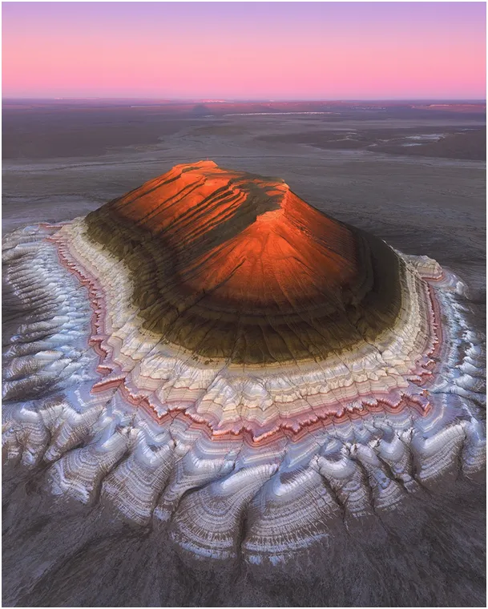
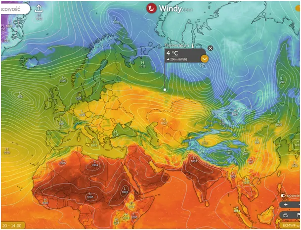
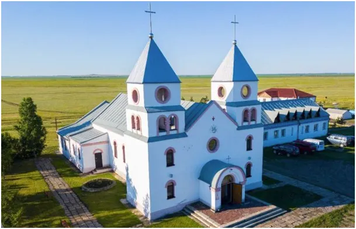

Cuda przyrody vs cuda prawdziwe.
Wielkanoc 2025 udała się nam wyjątkowo. Nie tylko nie zamknięto nam kościołów ale i dopisuje piękna pogoda, gdy na zachodzie Europy pada i wieje. W Pirenejach, na hiszpańsko-francuskiej granicy, pada świeży śnieg. Na drugim krańcu Europy, daleko na wschodzie, u stóp Uralu trwa pojedynek lata z zimą. W okolicach miasta Perm na małym odcinku drogi temperatura z 24 st. C spada do 4 st. C. Front tego kontrastu termicznego rozciąga się od Petersburga do granic Mongolii i ma ponad 3 000 km. Głębia kontynentu pozbawiona jest wpływu wilgotnego, zmiennego powietrza znad Atlantyku i rządzi się swoimi prawami. Po bardzo mroźnej i suchej zimie gwałtownie nadchodzi suche ciepłe lato, błotniste drogi interioru gwałtownie zmieniają się w zakurzone klepiska.

Ten jałowy klimat sprawia, że życie ma tam swoją specyfikę, step jest tu powszednim krajobrazem, ale jeśli już mamy góry to są one wyjątkowe. W północnym Kazachstanie możemy zobaczyć fantazyjne wzniesienia dawnego dna morza. Oryginalna struktura geologiczna dziś zachwyca swymi kolorami.

Kazachstan był miejscem masowych stalinowskich zsyłek Polaków z kresów po 1939 roku. Niestety przez 35 lat PRL bis, nie zrobiono nic by tych ludzi ściągnąć do ojczyzny. Kultywują oni polskie zwyczaje, budują kościoły, mimo to ich tradycja powoli rozrzedza się w lokalnym żywiole świata postsowiecko-turkmeńskiego. Tymczasem Polskę zalewają wszelkie nacje z całego świata z wyjątkiem pragnących wrócić do Polski Polaków.

Odchodzą już najstarsi, którzy byli świadkami cudownego ich ocalenia w 1941 roku. Pod koniec zimy przymierali głodem i nie widzieli dla siebie już ratunku. 25 marca w maryjne święto lato nadeszło tak gwałtownie, że z topniejącego śniegu obok polskiej osady nagle powstało głębokie na 7 m i długie na 5 km jezioro. Jezioro okazało się od razu pełne ryb, których było tak dużo, że wyciągano je z wody gołymi rękoma. Jezioro zniknęło w roku 1955.
Paweł Klimczewski